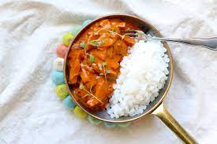

Korvstroganoff

Description
Korvstroganoff is a easy to cook and very tasty sausage stew with things like
falukorv, onion, cream, tomato puree that works great for the everyday dinner.
serve the korvstroganoff with cooket rice.
Ingredients
- 4 portions of rice
- 550g falukorv
- 1 yellow onion
- 1 msk cooking oil
- 3 msk tomato puree
- 2 1/2 dl cooking cream
- 1 dl milk
- 1 msk japanese soy
- 1 tsk dijonmustard
- peppar
- salt
Steps
- boild the rice as they say on the packaging
- cut the sausage in to sticks. pell and chop the onion
- fry the sausage and onion in oil on a fryingpan for about 5 min
add tomato puree and fry for a few min
- stir down the cream, milk, soy and dijonmustard. Let it simmer for about 5 min
- taste with salt and peppar
- For serving:serve with rice and a sallad